那些从书中寻找到的答案 01
2022 年的 12 月底，立了好几个 关于 2023 年要完成的flag，其中有一条是读完 52 本书，也就是一周一本，底层的需求就是想从书中寻找答案，寻找确定性。
在 2023 年 1 月份阅读《财务自由之路》这本书的时候，一时兴起根据书中作者的建议，把年度阅读目标改成了 100 本书，最终在 2023 年的年底如期完成阅读目标，每日阅读的习惯也得以完成，每天也都能坚持 2 小时左右的看书，阅读习惯也从纸质书变为电子书。

纸质书肯定不会消亡，去年也送了不少纸质书给朋友，但电子书是大势所趋，电子书更便捷更高效更适合多种场景和日渐碎片化的时间。
阅读的过程中遇到有启发的内容，都会做标注然后记录到 flomo 中。
在正式推荐看过的书之前，先重点介绍下 flomo 浮墨笔记：
flomo 是一款轻量级的笔记软件，不仅支持手机端 app 也能通过浏览器直接访问，也是市面上少有的能做到全端支持的笔记工具。
https://flomoapp.com/
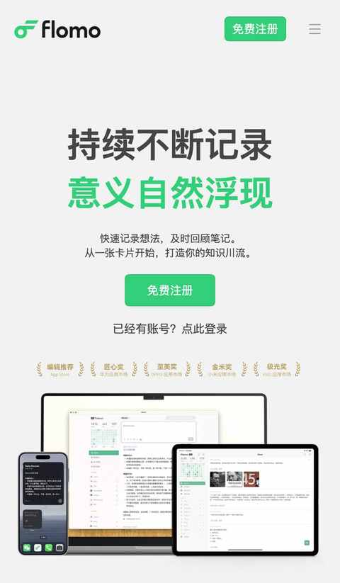
接下来重点根据当下的感受来分享一些书中的获取到的答案：
1. 如果有人问你第一本中文版本的《圣经》是在哪里印刷的？
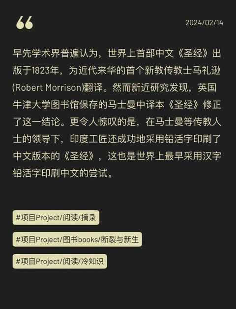
《断裂与新生》能给到你答案，副标题是一位中国记者笔下的印度日常，可能记者笔下的日常依然没有我们从各种视频中感受到的亲切，但这一视角也足够宝贵。
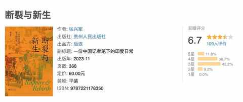
关于印度为何很难得到规模发展亦有表述：
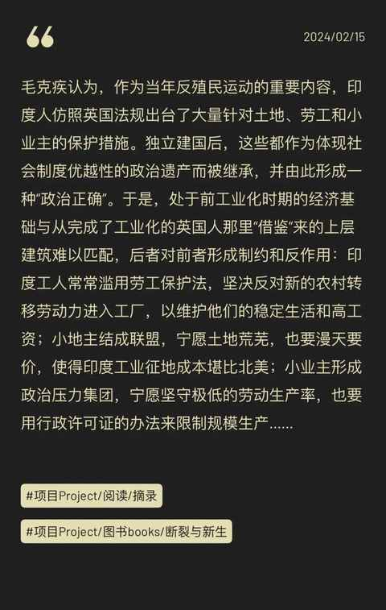
2. 怎么才能财务自由？
这本书适合每个人，作者有一个别称是“欧洲巴菲特”。
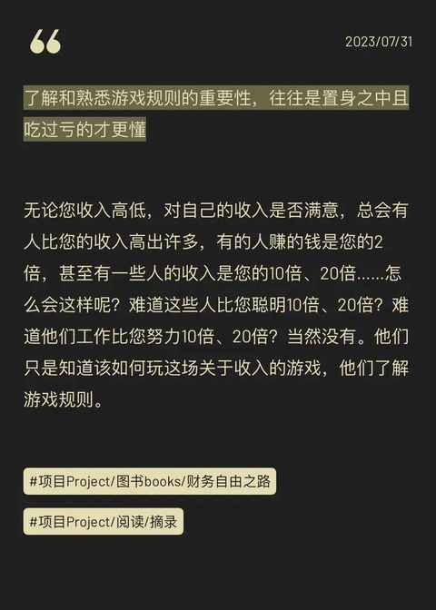
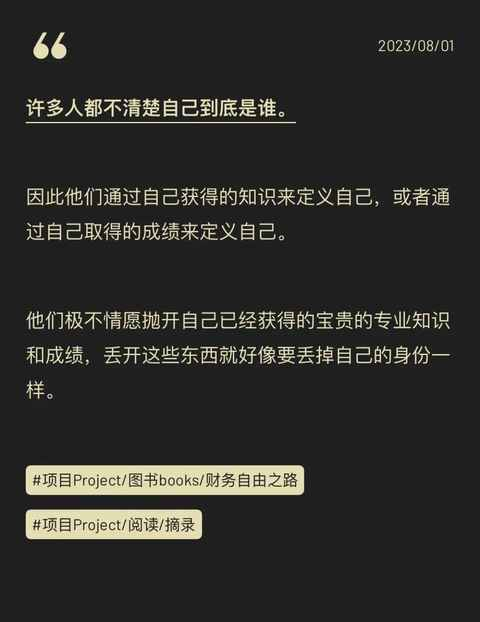
他的另一个本书《小狗钱钱》知名度会高不少：
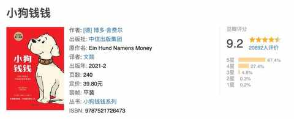
3. 关于什么是工作的意义和哪些工作是毫无意义的工作？
单纯书名就能感受到作者的情绪，书中列举的毫无意义的工作也足够窒息
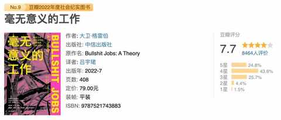
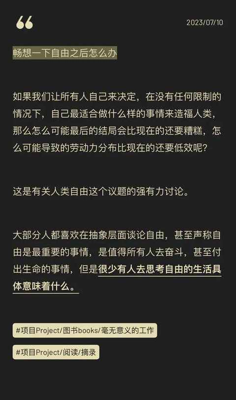
虽然有各种狗屁工作，但不能否定工作的意义
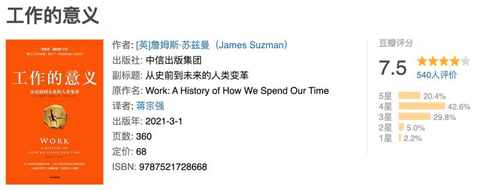
4. 或许是最适合当代人的阅读方法呢？
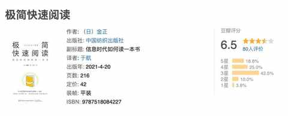
用 100 分钟读三遍，极简的快速阅读一本书
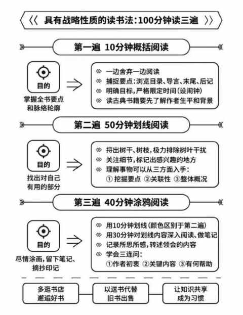
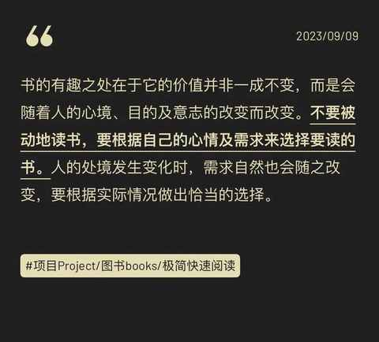
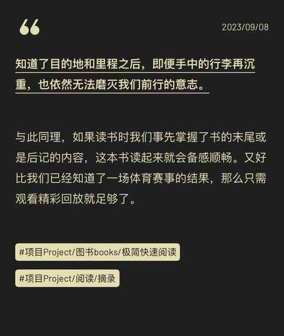
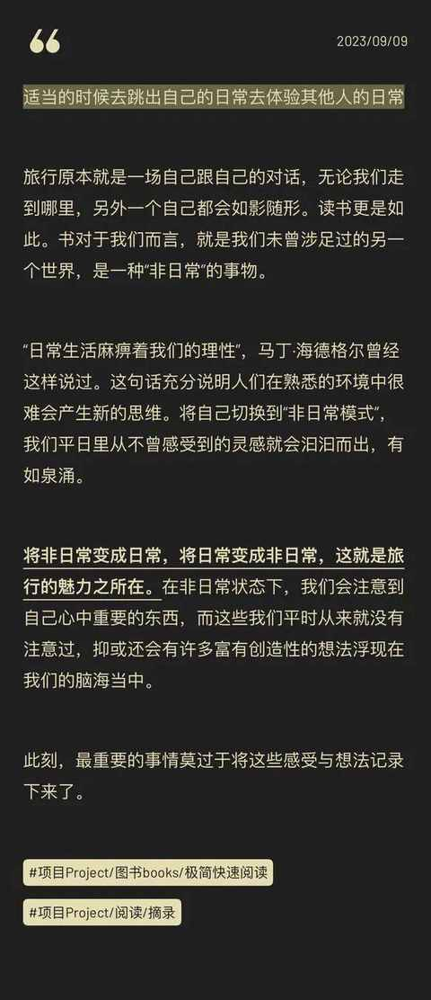
5. 亲密关系是每个人的母题吗？
是的！
即使是单身也依然会遇到亲密关系的难题，最新的版本修正了之前版本中一些不严谨的地方，虽然整本书很长，但绝对值得从前往后一字不落的读一遍。
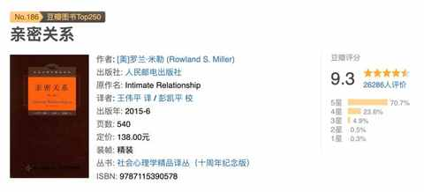
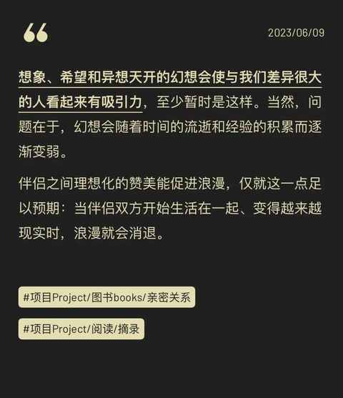
6. 社交媒体上为啥会有各式各样的热点，各种奇葩的观点？
下面两本书传播学的数据做了精细化的解答。
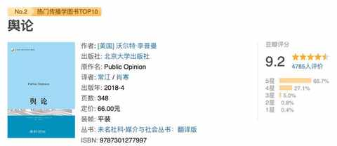
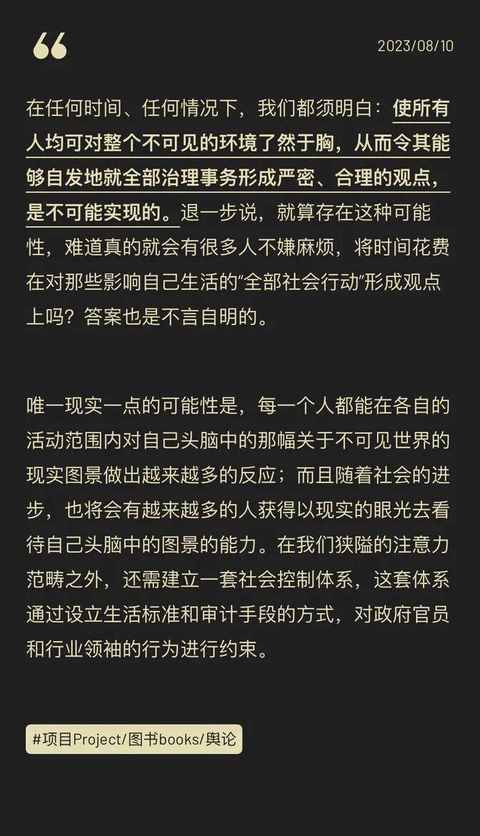
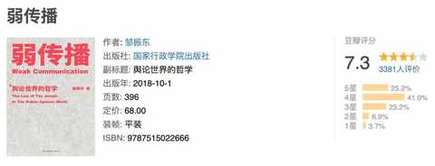
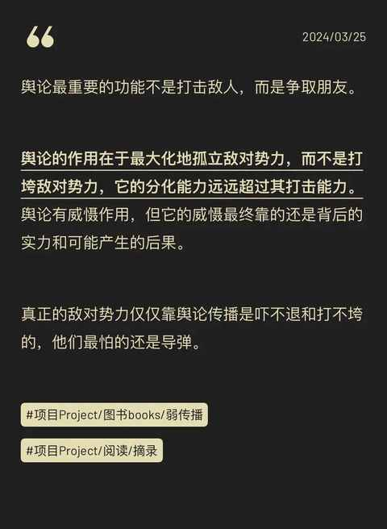
7. 秉持什么样的金钱观会更自洽？
作者没有讲任何大道理，本着知行合一的原则，他的表达都是基于个人经历和实践，果然真诚才是必杀技。
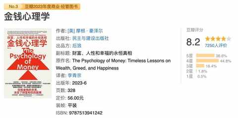
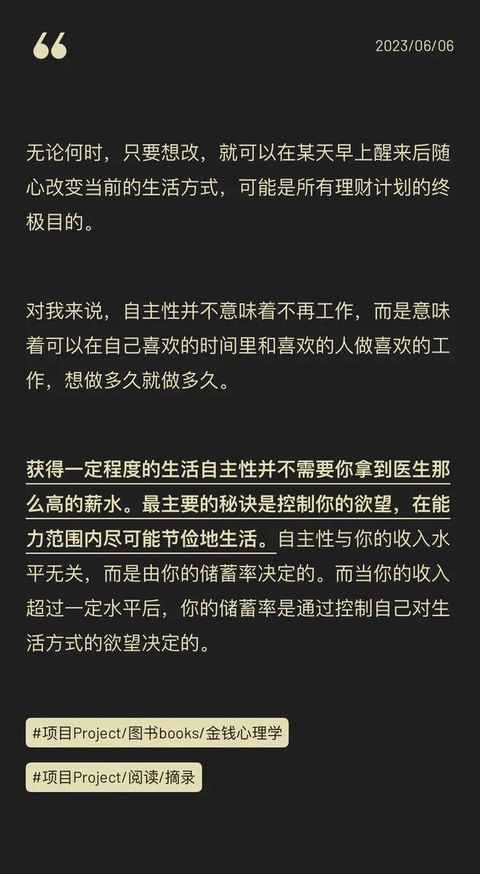
8. 每个家庭都需要育儿指导，但又有哪些基本的逻辑和理念？
有娃的肯定都认同：完全不发脾气，彻底地正面管教是不可能的，但是如果在理解书中理念和逻辑的基础上，少发脾气多引导肯定对父母和孩子都更好。
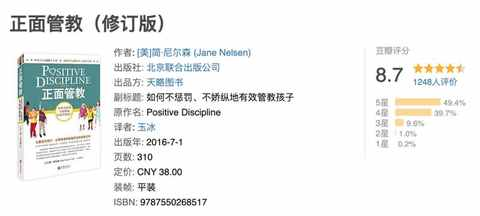
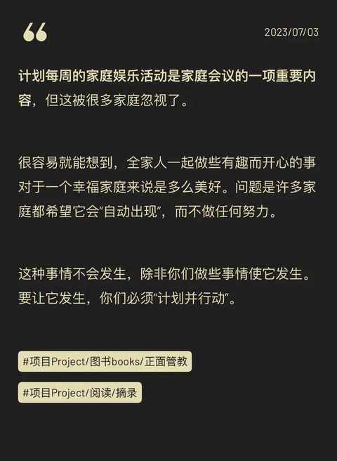
9. 商业的本质是什么？
内容真诚不绕弯子，通俗易懂
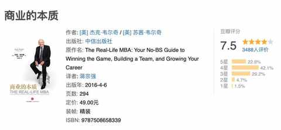
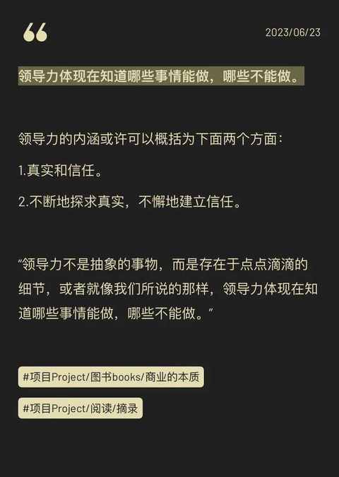
10. 为什么温州人把生意做到了全世界 ？
知名学者项飙老师的成名作《跨越边界的社区》，阅读的过程也能让你随时闪回到 90 年代。
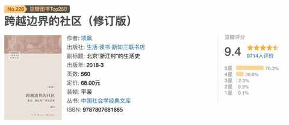
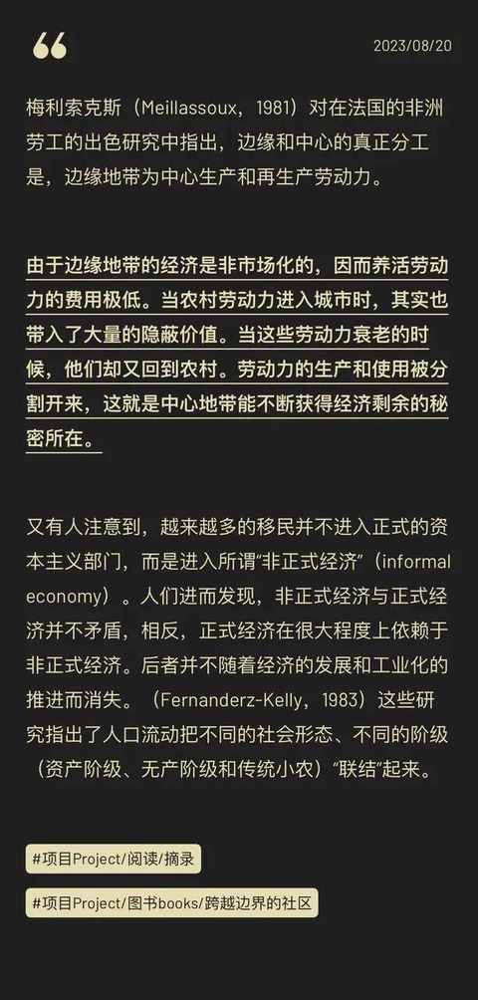